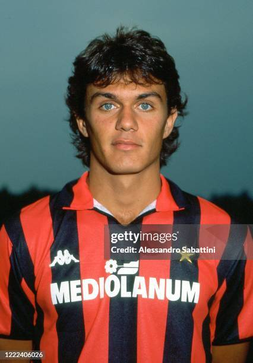

about
my site is about football lovers so
main

Paolo Cesare Maldini Ufficiale OMRI (Italian pronunciation:
[paolo maldini];[6] born 26 June 1968) is an Italian former
professional footballer who played primarily as a left-back and
centre-back for AC Milan and the Italy national team. He is widely
regarded as one of the greatest defenders of all time.[7][8][9][10][11][12]
As the Milan and Italy captain for many years, he was nicknamed "Il Capitano".
Maldini held the record for most appearances in Serie A, with 647 appearances,
until 2020, when he was overtaken by Gianluigi Buffon. He also holds the joint-record
for most European Cup/UEFA Champions League final appearances (8) alongside Paco Gento.
[13][14] He most recently worked as a technical director for Milan, as well as being
co-owner of USL Championship club Miami FC.
georgian footbalers
 Kvaratskhelia started his senior career playing for Dinamo Tbilisi at age 16, before departing to
Rustavi where he spent half a season. During his combined three-year tenure at Lokomotiv Moscow and
Rubin Kazan, Kvaratskhelia won two consecutive Russian Premier League Best Young Player awards. Following a
short spell at Dinamo Batumi, Kvaratskhelia signed for Napoli in 2022, and in his debut season helped the
club to reach the quarter-final of the UEFA Champions League for the first time ever, and win a first Serie
A title in 33 years, finishing as the league's top assist provider. This saw him named Serie
A Most Valuable Player and the Champions League's Young Player of the Season.[5]
Kvaratskhelia started his senior career playing for Dinamo Tbilisi at age 16, before departing to
Rustavi where he spent half a season. During his combined three-year tenure at Lokomotiv Moscow and
Rubin Kazan, Kvaratskhelia won two consecutive Russian Premier League Best Young Player awards. Following a
short spell at Dinamo Batumi, Kvaratskhelia signed for Napoli in 2022, and in his debut season helped the
club to reach the quarter-final of the UEFA Champions League for the first time ever, and win a first Serie
A title in 33 years, finishing as the league's top assist provider. This saw him named Serie
A Most Valuable Player and the Champions League's Young Player of the Season.[5]